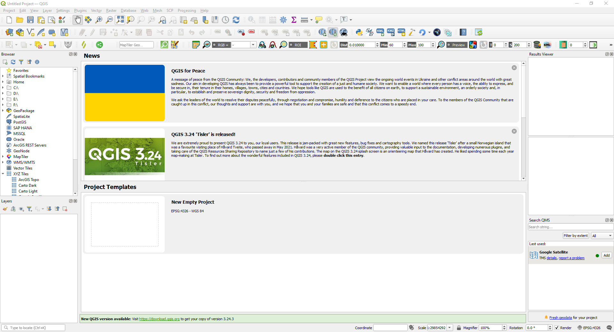
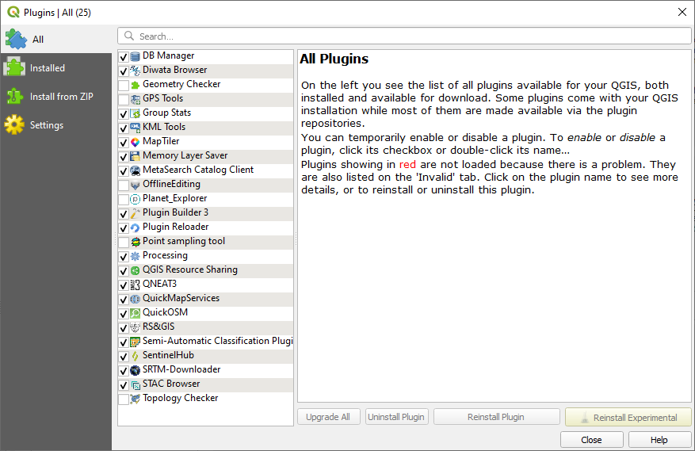
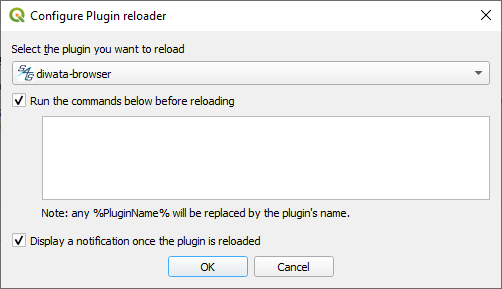

Development of a QGIS DIWATA Browser
This document describes how to continue this development by integrating the source code into QGIS.
Dependencies
The following are required to develop the plugin.
Setting up the source code

- Open QGIS
- Under
Settings, go toUser Profiles, and selectOpen Active Profile Folder. - A folder will open, copy this directory.
-
Open a command line interface and go to the copied directory.
cd <active profile folder> -
Clone source code in the directory
git clone https://github.com/grasped/qgis-diwata-browser.git
Reading the plugin
Add the plugin to the installed plugins.

- Under
Plugins, go toManage and Install Plugins.... - Click
Abort Fetchingin the dialog box. - In the Plugins dialog box, go to
Alltab, look forDiwata Browserand check the checkbox. - Close the dialog box.
Configure the plugin to Plugin Reloader
In order to test changes in the source code, QGIS must re read the plugin. It does so using the Plugin Reloader. Configure the default to Diwata Browser.

- Under
Plugins, go toPlugin Reloader, and selectConfigure. - The
Configure Plugin reloaderdialog box will appear. - Under the
Select the plugin you want to reloaddropdown, selectDiwata Browser. - Check all the checkboxes.
- Close the dialog box.
Making changes
If the plugin is being improved, the changes can be tested by reloading it.
- Use your favorite text editor to edit the cloned source code.
- Under
Plugins, go toPlugin Reloader, and selectReload plugin: diwata-browser. This can also be done byCTRL+F5. This can also be done by clicking the reload logo in the toolbar.